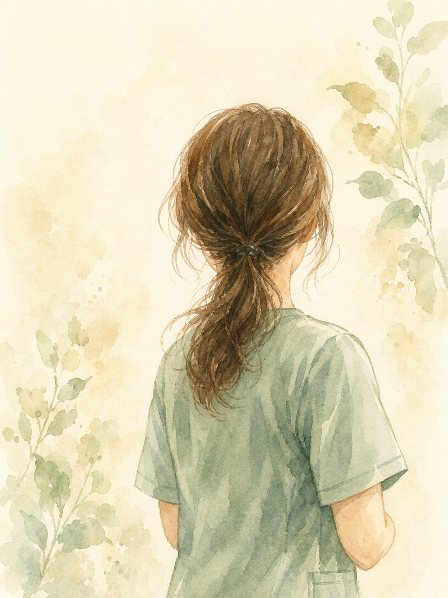

ごあいさつ
在宅での暮らしに、
在宅での暮らしに、
看護でそっと寄り添うために。
ご高齢の方も、病気や障がいのある方も、住み慣れたご自宅で、その人らしい暮らしを続けていただきたい。そう考えて、この事業所を立ち上げました。
一人ひとりのお身体の状態や、ご本人・ご家族の想いにじっくり向き合い、専門職として確かなケアをお届けします。「相談してよかった」と思っていただけるステーションを目指します。
株式会社ふくろう 代表 矢作 貴子
私たちが大切にしていること
最期まで、その人らしい暮らしを。
梟（アウル）は、暗がりでもよく見え、羽音を立てず静かに寄り添う鳥です。不安の大きい在宅療養の中で、必要なときにそっと近くにいられる存在でありたい。その願いを社名に込めました。
ご本人の「こうありたい」を尊重し、ご家族とともに考える。主治医やケアマネジャーと連携し、暮らしの中で続く看護を、少数精鋭の専門特化型ステーションとしてお支えします。
ご利用までの流れ
ご相談から訪問開始まで
1
ご相談
お電話・フォーム・ケアマネジャー経由でご連絡ください。
2
状態の確認
状態・ご希望・必要な医療処置をうかがいます。
3
医療との連携
主治医の指示書や関係機関との連携を整えます。
4
訪問開始
看護計画に沿って訪問看護を始めます。
よくあるご質問
ご相談前に、よくいただくご質問
訪問看護はどのような人が利用できますか？
主治医が訪問看護を必要と認めた方が対象です。年齢や病気の種類を問わず、ご自宅で療養される方を幅広くお支えします。
対応エリアと訪問の時間帯を教えてください。
奈良市・生駒市・木津川市・精華町・和束町が対応エリアです。訪問は9:00〜17:30を基本としています。
どんな医療処置に対応できますか？
褥瘡（床ずれ）管理、ストーマケア、気管カニューレ管理、創傷処置、脱水補正、認知症のある方への対応など、専門資格に基づくケアに対応します。詳しくはサービス案内をご覧ください。